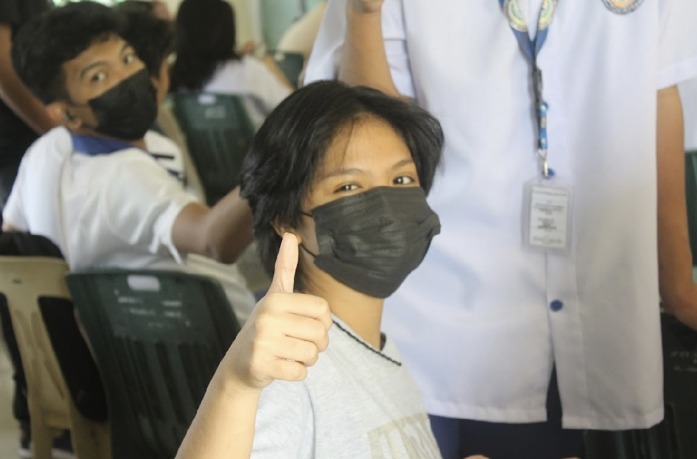
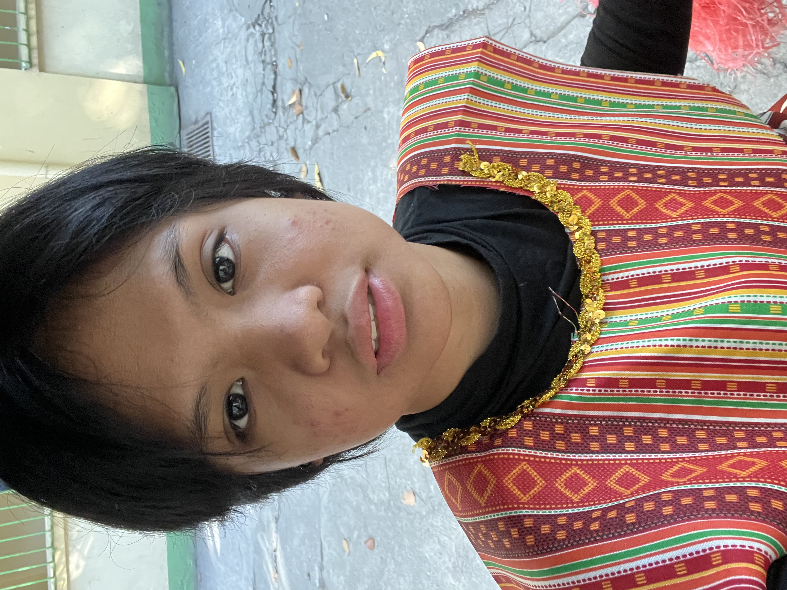
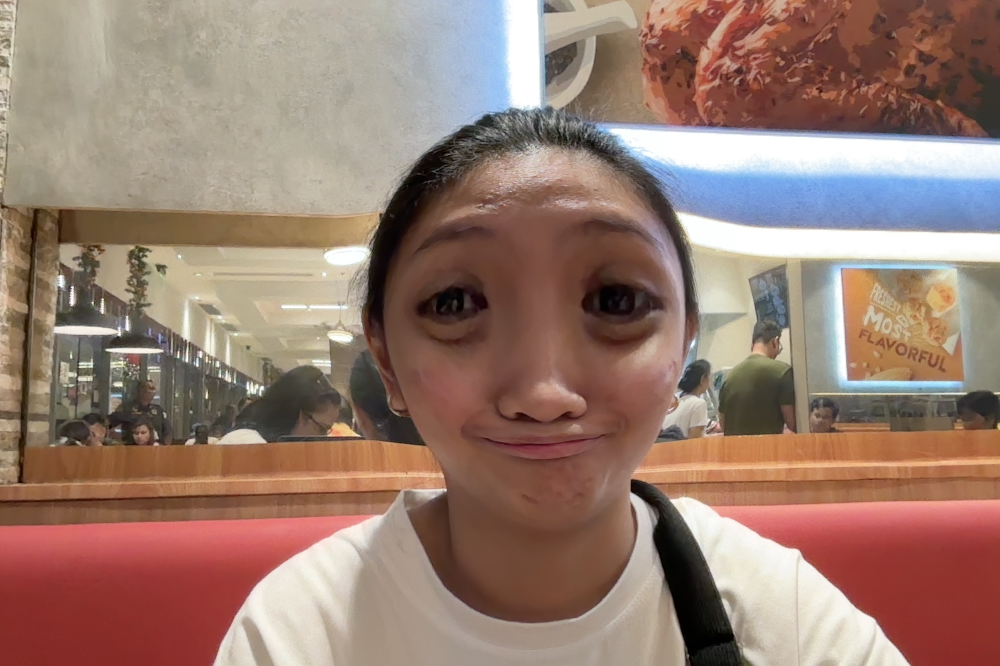
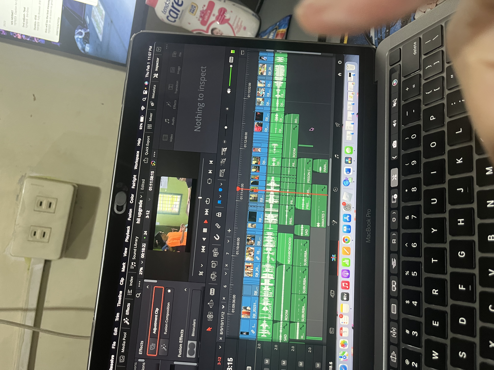
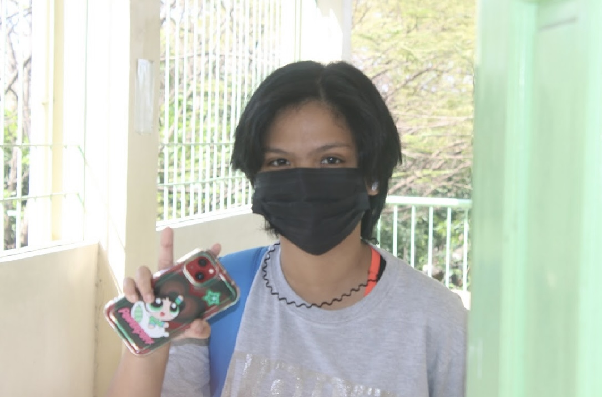

Me and my physical self? It's been a rollercoaster—plot twists, glow-ups, and all..
Read MoreAbout Me

Who I Am
My name is Margarette Jem S. Mello, a quiet but creative person from BSIT 1-11. I'm currently 19 years old. I have a background in Video Editing and I am also a gamer! Music plays a very huge part in my life, I cannot literally can't live without Spotify. In my free time, I enjoy playing online games with friends, studying coding and edit videos. My biggest interest? Games, of course 😜. One unique trait? I can multitask like a pro—I can play games and cram deadlines at the same time. (Just kidding po)

My Journey So Far
In my 1 years of existence, I went through countless challenges—more than you could count on your fingers... and with that only one person knows it all and I am thankful to her. I am glad that I'm still holding on even though I faced those challenges. With those life experiences, I become who I am today, I got my achievements that shaped who I am today.

How I See Myself
It's simple a person who does not care about what is happening in their surroundings. Having a strength like that is cool, they say, but having those strength feels like you do not have feelings and emotions and it sucks because you cannot figure out your own self. But then, I use this as a aspiration and motivation that turns to "continue what you are doing because they do not care about you."

Why I Chose This Platform
I chose this platform because I want to start in a scrap and then little by little study it so I can have a little advance study about Web Development and this platform makes it easy for me since I am a Video Editor and I am more on Designing Videos.
Journal
Physical Self
Social Self
Stop minimizing yourself to fit into spaces you've outgrown...
Read MoreSpiritual Self
Diving deep into my values and beliefs has sparked a clear vision of my true purpose in life...
Read MoreDigital Self
Tell me who your friends are, and I'll tell you who you are...
Read MoreFuture Self
When I picture my future, I see myself thriving in all the areas that matter most...
Read More

Conclusion
TMy journey finally aims to bring me closer to my true self. Every encounter has taught me something new, whether it's how to respect my principles, set boundaries in relationships, learn to accept my body, or discover freedom in the digital world. I've come to the realization that I don't have to adapt or seek favor from others. I choose to live a confident, balanced, and self-respecting life because I have the power to determine my future.
This is my journey—to develop, to be free, and to always remain loyal to who I am.